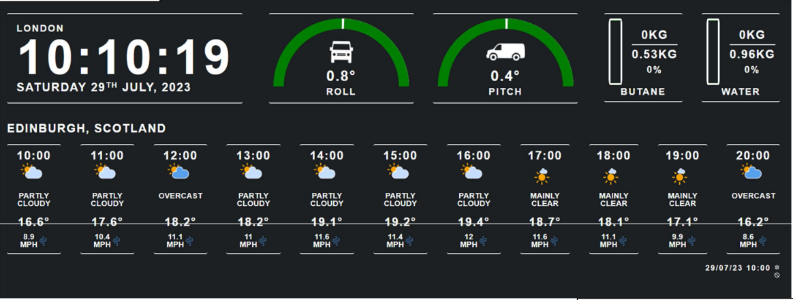

Van Kiosk


A kiosk device used to display handy info for a camper van. The screen shows info like tilt, butane levels and weather. The screen itself has been made bespoke for a friend after he came to me with the idea for his own van, but should be fairly reuseable as long as the hardware can be matched.

The kiosk itself is a website locally hosted on a Raspberry Pi 3 with the device hardcoded to boot into a Chromium window displaying the website and locking into it. The website uses Javascript scripts to display a group of JSON files that have been recorded by a set of Python scripts reading the values from different devices.
The first display (excluding the time, but that's simply taken from the Pi itself) is the tilt of the van, shown in the screenshot above as roll and pitch. The tilt is recorded using an Adafruit MPU-6050 connected to the Pi directly. A Python script then reads the values from the devices bus and converts the bits to degrees. These values are then wrote into a json file on an endless loop, which is in turn read by the webserver by a Javascript script. The script displays the tilt through a basic reading, but also rotating the dial above the value as well as the icon of the van. I also included a script to zero the readings of the tilt sensor, intended to be used manually when the van is parked on flat ground.
The second display shows butane and water levels in the van. Originally me and my friend looked into using tank sensors, but these were far too expensive. Instead we decided to use a scale, and measure the contents of the tanks by mass. When looking into scales that could be used with python easily, one answer kept appearing and that was to use a Wii Fit board.
Unlike most basic scales, Wii Fit boards come prepared with bluetooth connectivity and device readability (intended for use with a Wii, but we took liberties) as well as filling the shelves of most charity shops at a far more reasonable price than most scales with bluetooth. As well, Wii Fit boards are split into 4 sections to allow tracking of a where a person is pressing their weight for games. This meant that the board could be used to weigh multiple items, in this case two seperate tanks for water and butane. Despite all the benefits of the Wii Fit board, one major issue was that it was intended for people and games, so the recordings were not completely accurate (but according to my friend, good enough) and also we would have to use some base weight on the board itself to keep the device active. Below is a couple of pictures taken when testing the device using two large books (1838g each) to act as a base and cups of water to simulate the tanks.

Similarly to how the tilt sensor ran, a Python script would connect to the device over bluetooth then read the values returned and convert them for use with the display and save to a JSON file. The Javascript would then read the recordings and display as a meter as shown above.
The third and final display shown the weather forecast. This pulled data from the Open-Meteo API using a Python script directly every 30 minutes. However, as the camper van is intended to be mobile, the current location needed to be recorded. Using a DFRobot TEL0138 GPS Receiver, the python script would read the values of the longitude and latitude then send to the api as parameters. This wasnt as reliable as I had hoped, so as a backup solution whenever the GPS wasnt working the ip being used by the device would be used to gain a location and converted into coordinates. Despite this being much more innacurate, it would reliably work as long as the van maintained internet connection. Once again, the results for this would be recorded into a json file then displayed on the kiosk.